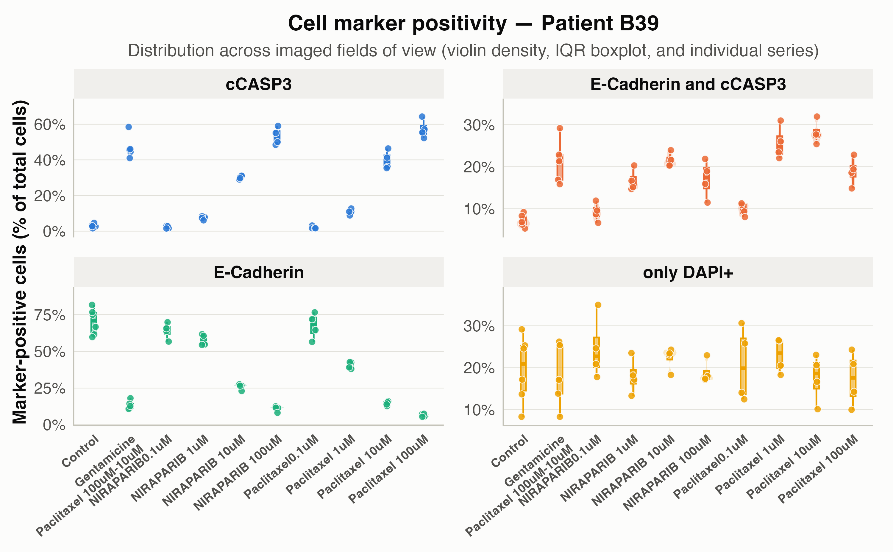
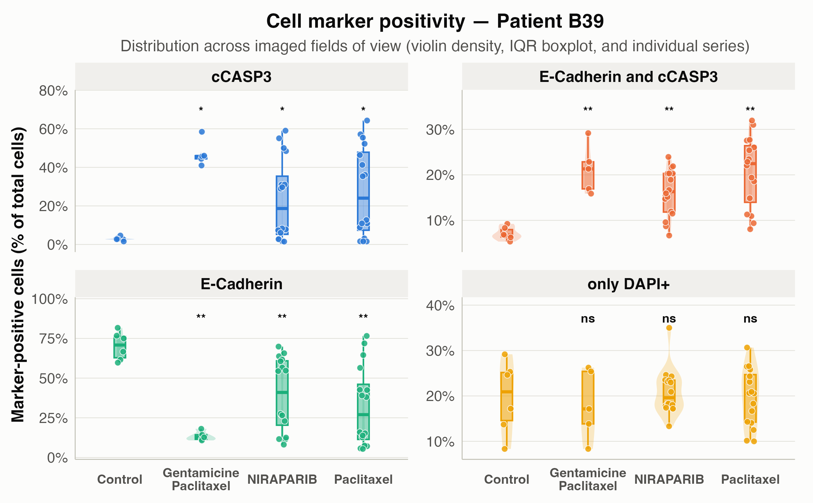
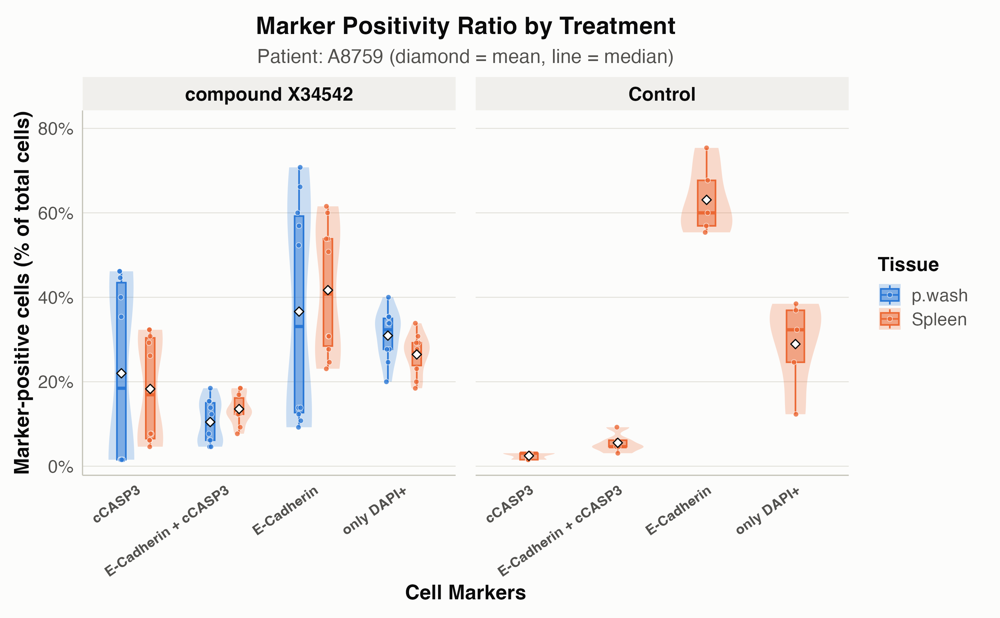
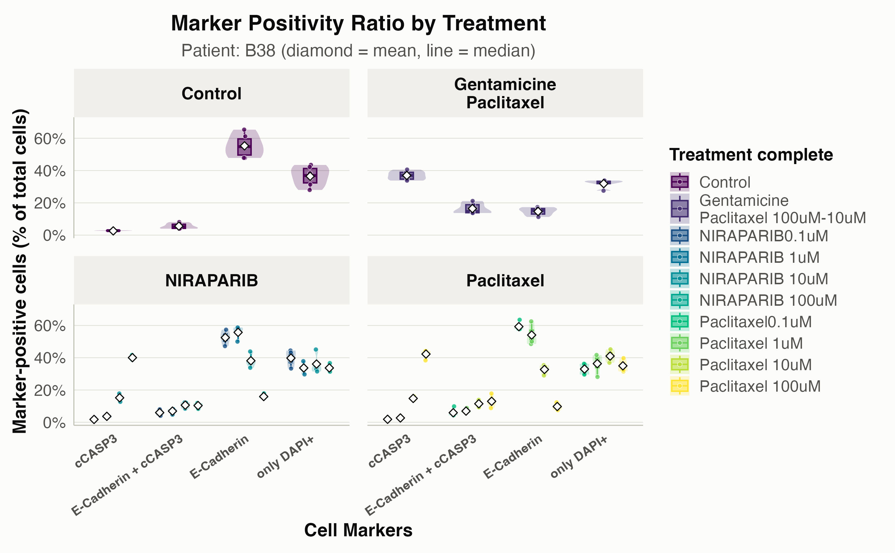

End-to-End Quality Control and Feature Inspection
Source:vignettes/quality-control-workflow.Rmd
quality-control-workflow.RmdOverview
Before normalizing drug responses or fitting dose-response models, it is critical to verify that cell segmentation, marker classification, and replicate fields of view (series) behaved consistently across your microscopy screen.
This tutorial demonstrates the complete quality control (QC) workflow
in drugsens:
- Auditing per-image total cell counts (
sum_cells) and marker ratios withmake_count_dataframe(). - Visualizing patient-level marker positivity distributions and
testing treatments against
Controlwithget_QC_plots(). - Comparing marker ratios across tissue origins and drug
concentrations with
get_QC_plots_parsed_merged_data(). - Inspecting single-cell morphological features (such as nuclear area
and marker intensity) directly from
data_binding().
1. Auditing Image-Level Cell Counts and Marker Ratios
First, bind the example QuPath CSV files and compute image-level
counts using make_count_dataframe():
library(drugsens)
example_dir <- system.file("extdata/to_merge/", package = "drugsens")
bind_data <- data_binding(
path_to_the_projects_folder = example_dir,
files_extension_to_look_for = "csv"
)
counts_df <- make_count_dataframe(bind_data)
summary(counts_df[, c("sum_cells", "cCASP3_ratio_of_total_cells",
"E-Cadherin_ratio_of_total_cells", "onlyDAPIPositve_ratio_of_total_cells")])
#> sum_cells cCASP3_ratio_of_total_cells E-Cadherin_ratio_of_total_cells
#> Min. :60.00 Min. :0.0133 Min. :0.0267
#> 1st Qu.:64.00 1st Qu.:0.0290 1st Qu.:0.1500
#> Median :67.00 Median :0.0882 Median :0.4697
#> Mean :67.46 Mean :0.1984 Mean :0.3970
#> 3rd Qu.:71.00 3rd Qu.:0.3881 3rd Qu.:0.6000
#> Max. :75.00 Max. :0.6429 Max. :0.8167
#> onlyDAPIPositve_ratio_of_total_cells
#> Min. :0.0833
#> 1st Qu.:0.2133
#> Median :0.2794
#> Mean :0.2757
#> 3rd Qu.:0.3333
#> Max. :0.4516Pivot the wide count table into tidy long format with
change_data_format_to_longer():
long_df <- change_data_format_to_longer(counts_df)
head(long_df[, c("PID", "Tissue", "Treatment_complete", "Image_number",
"marker_positivity", "marker_positivity_ratio")])
#> # A tibble: 6 × 6
#> PID Tissue Treatment_complete Image_number marker_positivity
#> <chr> <chr> <chr> <chr> <chr>
#> 1 A8759 p.wash compoundX3454210uM series 16 onlyDAPIPositve_ratio_of_total_c…
#> 2 A8759 p.wash compoundX3454210uM series 16 E-Cadherin_ratio_of_total_cells
#> 3 A8759 p.wash compoundX3454210uM series 16 cCASP3_ratio_of_total_cells
#> 4 A8759 p.wash compoundX3454210uM series 16 E-Cadherin and cCASP3_ratio_of_t…
#> 5 A8759 p.wash compoundX3454210uM series 17 onlyDAPIPositve_ratio_of_total_c…
#> 6 A8759 p.wash compoundX3454210uM series 17 E-Cadherin_ratio_of_total_cells
#> # ℹ 1 more variable: marker_positivity_ratio <dbl>2. Patient-Level QC Plots (get_QC_plots())
get_QC_plots() displays a trimmed violin density,
compact IQR boxplot, and individual field-of-view points for each cell
marker, with independent percentage y-axes
(scales = "free_y") so low-abundance markers like
cCASP3 are never compressed by high-abundance markers like
E-Cadherin:
get_QC_plots(
long_df,
isolate_a_specific_patient = "B39",
save_plots = FALSE
)
Comparing Multiple Doses or Treatments with Statistical Annotations
When a patient has multiple treatments or doses (including a
Control group), set compare_to_control = TRUE
to automatically run a Wilcoxon rank-sum test
(stat_method = "wilcox") or t-test
(stat_method = "t.test") against Control
within each marker facet:
get_QC_plots(
long_df,
isolate_a_specific_patient = "B39",
x_plot_var = "Treatment",
compare_to_control = TRUE,
control_treatment_name = "Control",
stat_method = "wilcox",
p_adjust_method = "BH",
pvalue_label = "p.adj.signif",
save_plots = FALSE
)
3. Multi-Condition & Dose QC
(get_QC_plots_parsed_merged_data())
get_QC_plots_parsed_merged_data() facets by
Treatment and places all four cell markers side-by-side on
the x-axis, with diamonds marking the group mean and horizontal lines
marking the median.
Coloring by Tissue Origin
(fill_color_variable = "Tissue")
plots_by_tissue <- get_QC_plots_parsed_merged_data(
long_df,
list_of_columns_to_plot = "marker_positivity_ratio",
fill_color_variable = "Tissue",
isolate_specific_patient = "A8759",
save_plots = FALSE,
verbose = FALSE
)
plots_by_tissue[["A8759.marker_positivity_ratio"]]
Coloring by Complete Treatment & Dose
(fill_color_variable = "Treatment_complete")
When a drug is tested at multiple concentrations (such as
Paclitaxel and NIRAPARIB from 0.1
to 100 uM), setting
fill_color_variable = "Treatment_complete" splits the
violins by dose within each drug facet:
plots_by_dose <- get_QC_plots_parsed_merged_data(
long_df,
list_of_columns_to_plot = "marker_positivity_ratio",
fill_color_variable = "Treatment_complete",
isolate_specific_patient = "B38",
save_plots = FALSE,
verbose = FALSE
)
plots_by_dose[["B38.marker_positivity_ratio"]]